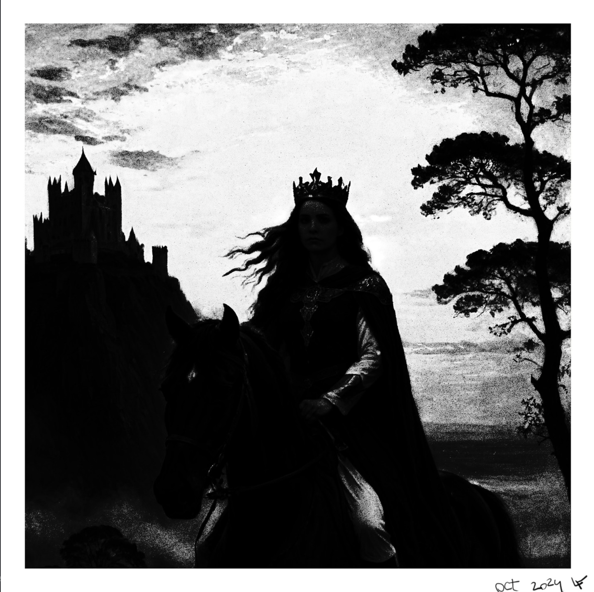
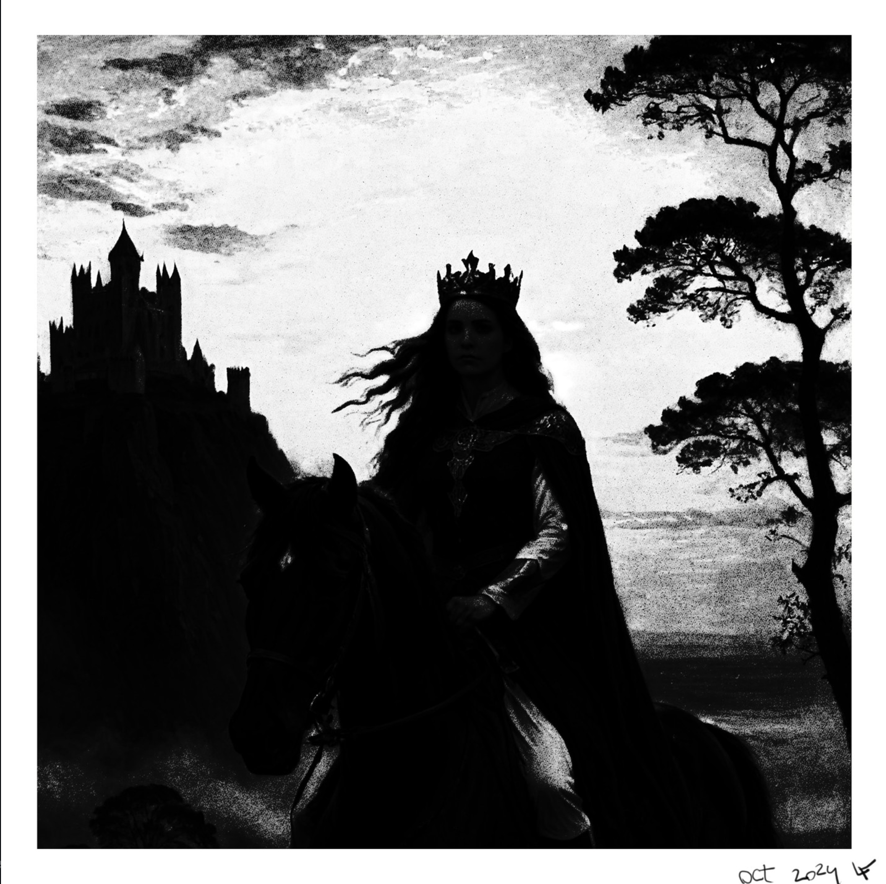
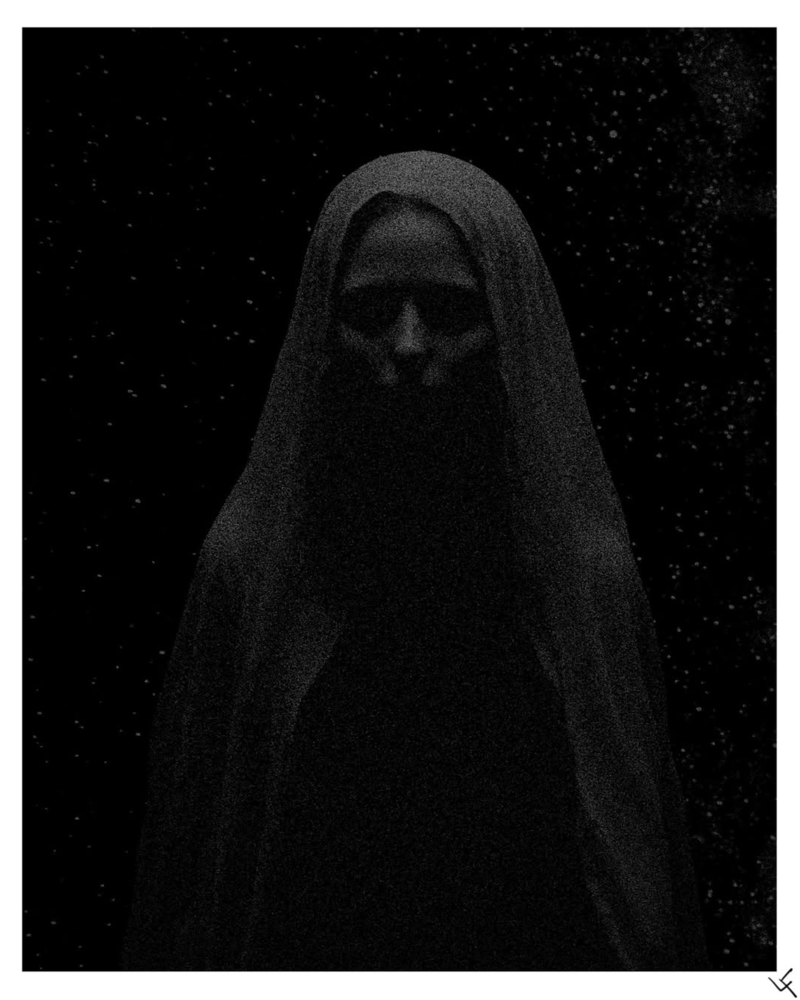
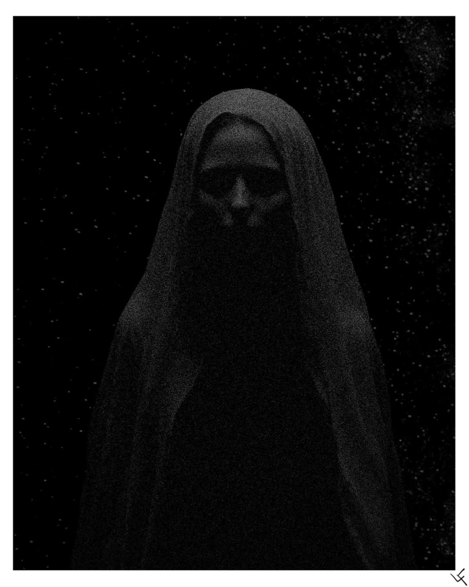

lferreira@uvic.ca
0000-0002-8919-079X, Astronomer
Leonardo Ferreira
lferreira@uvic.ca
0000-0002-8919-079X, Astronomer
During my time as a Post-Doc at the University of Victoria, I had the opportunity to reconnect with my love for the Ocean in the cold waters of the Salish Sea. I got into Snorkelling inspired by Sara Ellison (she wrote a great book on it!). This became a passion of mine during my time in Victoria -- Waking up early to dive in 8 degrees water before heading to work. I also started learning video editing to document my adventures, and spent equal parts underwater and sat in front of Davince Resolve editing my videos. Below you can find some of these videos.
I also enjoy creating digital illustrations. Here are a few of them:

 

 
